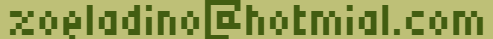

For photography related question you can contact me through Instagram DMs. You can also find some photography work I did on this page.
For work or school related questions you can approach me on LinkedIn, you can either add me to your network or just shoot me a msg.
You can also try to contact me by mail for any type of question, my email address is:
